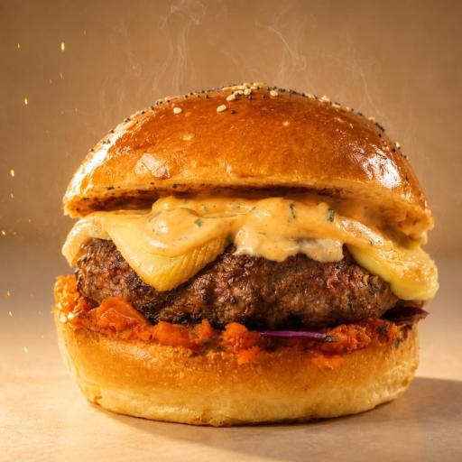

Le menu Willi's
Un burger classique au choix, frites maison et boisson au choix.
- Burger 150 g au choix
- Frites maison
- Boisson au choix
33 place de Beaune · Chalon-sur-Saône
Pain maison, viande fraîche, frites maison. Sur place, à emporter ou en livraison — et un menu étudiant à 10 €.
La carte
Des recettes simples, des produits qu'on aime, et des prix qui restent raisonnables. Ici, les frites sont maison et le pain aussi.
Steak haché façon bouchère 150 g, salade, tomate, oignon, sauce Willi's. Le fromage, c'est vous qui voyez.
 Le classique
12,00 €
Le classique
12,00 €
Steak 150 g, cheddar, salade, tomate, oignon, sauce Willi's.

Le régional 12,00 €Steak 150 g, morbier, salade, tomate, oignon, sauce Willi's.
Steak 150 g, époisses, salade, tomate, oignon, sauce Willi's.
L'esprit Willi's
Le Neptune a tenu 47 ans ici. En avril 2026, Luca Perana a repris les murs, gardé les tomettes, et ouvert Willi's Burger.
Le nom, c'est celui de son fils. Le projet, c'est un burger que l'on peut manger vite, bien, et sans se ruiner.
« Je voulais un endroit où je suis quasiment seul avec un cuistot. » Luca Perana — Le JSL, avril 2026
Les avis
« Burger délicieux !! (Époisses) superbe accueil, une carte qui donne l'eau à la bouche, un gros burger et de bonnes frites maison. »
« Les steaks sont épais, les frites semblent être maison. »
« Prix imbattables, bon accueil, propre. »
Avis publiés sur Google, consultés en novembre 2026. La note globale peut évoluer.
Infos pratiques
| Lundi — samedi | 11:30 – 13:45 18:30 – 21:30 |
|---|---|
| Dimanche | 18:45 – 21:30 |
Horaires de la boutique en ligne, novembre 2026. Ils peuvent évoluer : un coup de fil vaut mieux qu'un burger froid.
Paiement par carte bancaire. Menu étudiant sur présentation de la carte étudiante.